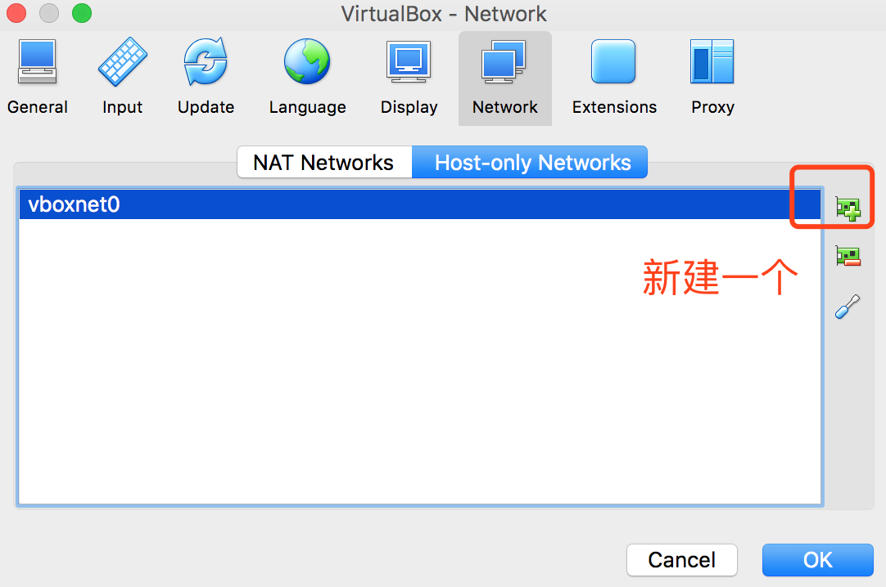
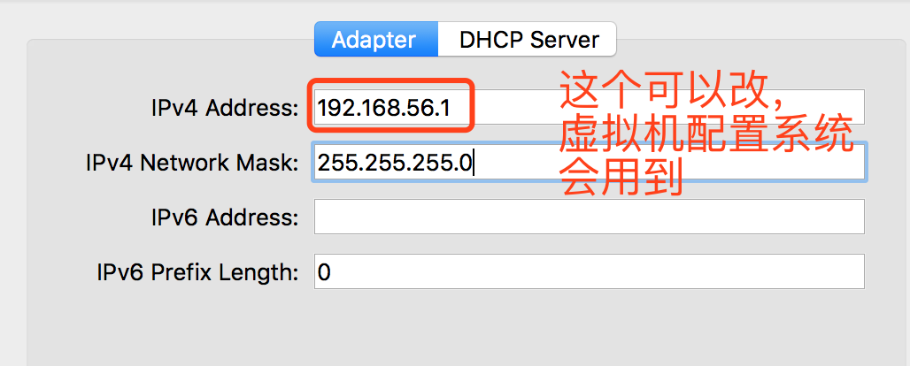
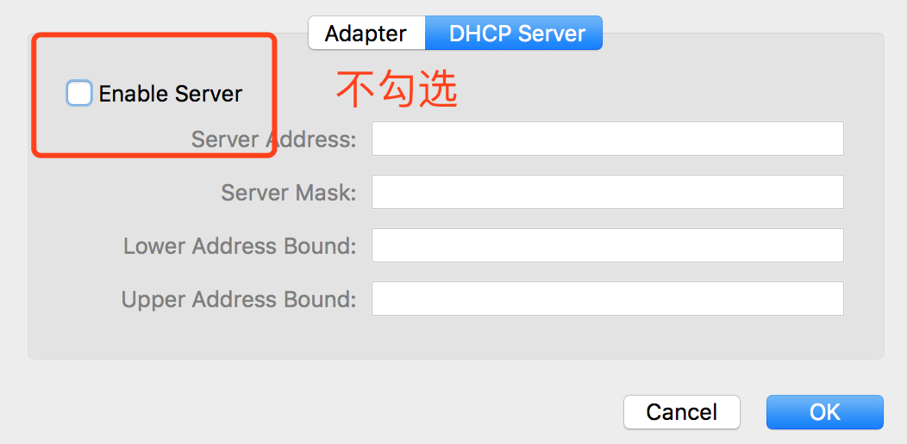
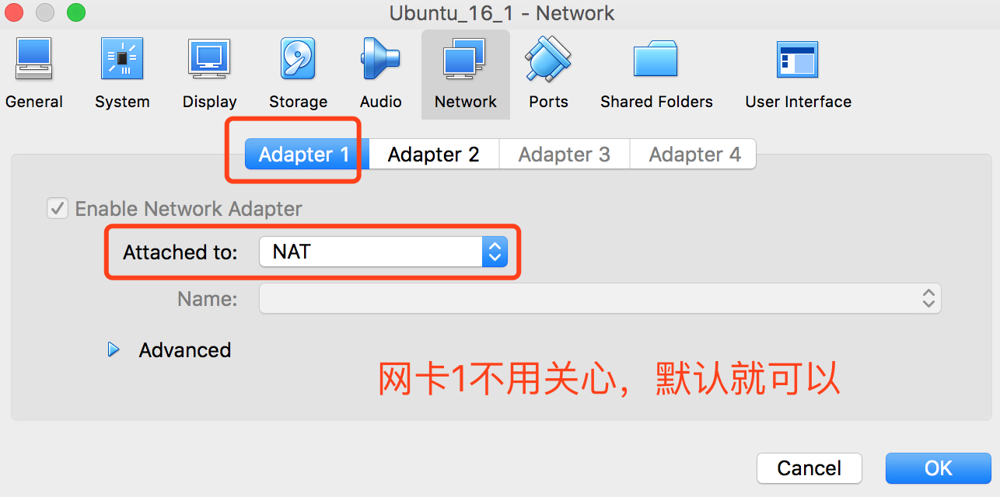
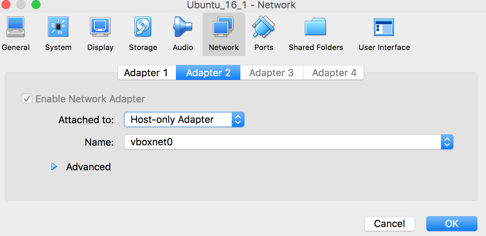
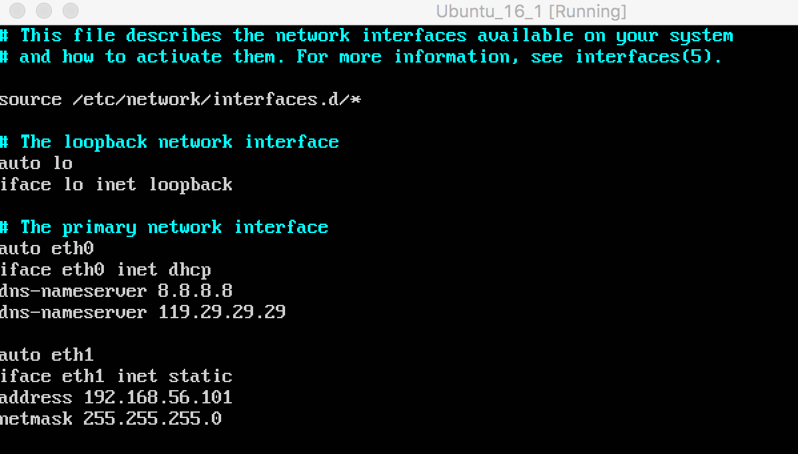

VirtualBox搭建Ubuntu虚拟机集群
VirtualBox搭建Ubuntu虚拟机集群
环境搭建
#1. ubuntu16.04镜像系统文件下载
#2. 安装教程(网上有详细的，就不重复造轮子了)
网络问题
1. 络配置问题
- 默认情况下，VirtualBox使用的是NAT网络模式，这种模式可以通过主机访问外网，但是不能实现主机与虚拟机，虚拟机与虚拟机之间的通信，所以需要做相应的配置。
2. ubuntu16.04,如何修改网卡名称为eth0,wlan0
默认情况下，ubuntu16.04使用的网卡名不是eth0,如果需要修改为eth0,如何修改
sudo vim /etc/default/grub
找到GRUB_CMDLINE_LINUX=””改为GRUB_CMDLINE_LINUX=”net.ifnames=0 biosdevname=0”
然后sudo grub-mkconfig -o /boot/grub/grub.cfg
# 问题解决 ##1. VirtualBox提供的虚拟网卡类型
| 选项 | 特点 | 其他 |
|---|---|---|
| NAT | 虚拟机通过主机访问外网 | 虚拟机之间无法互相访问，主机无法访问虚拟机，外网可以通过端口转发 (port forwarding) 访问虚拟机。 |
| Bridged | 虚拟机通过主机网卡与外网桥接，有独立的IP 地址 | 虚拟机之间、虚拟机与主机之间、虚拟机与外网之间都可以互相访问。 |
| Host-only | 虚拟机通过Host-only网卡与主机之间建立内网 (192.168.56.0/24) | 虚拟机之间、虚拟机与主机之间可以互相访问。虚拟机与外网之间无法互相访问。 |
| Internal | 虚拟机之间建立内网 | 虚拟机之间可以互相访问。虚拟机与主机之间、虚拟机与外网之间无法互相访问。 |
| NAT Network | 虚拟机之间建立内网，并通过主机访问外网 | 虚拟机之间可以互相访问。主机和外网无法访问虚拟机。 |
##2. NAT网络转发 + 仅主机 的模式
1. virtualbox 全局设置，ctrl + G(Mac 是 command + G)
步骤_1

步骤_2

步骤_3

2. virtualbox 虚拟机设置(局部设置)，ctrl + S(Mac 是 command + S)
虚拟机关闭的情况下，新建第二个网卡
步骤_1

步骤_2

3. 开启虚拟机，虚拟机配置
- 修改/etc/network/interfaces文件
vim /etc/network/interfaces
 - 保存后重启系统即可 :reboot
解决复制粘贴的问题
由于我安装的是Ubuntu服务器镜像，所以没有所谓的输入输出驱动什么的，想要相互复制也就比较难了，另一个原因是VirtualBox虚拟机软件窗口大小也不好用，
所以，最好的解决办法自然是使用本地SSH登录了。
如果ssh连接失败，记得在安装：
sudo apt-get install openssh-server
$ 无界面打开
vboxmanage startvm “Ubuntu_16_1” –type headless
$ 连接
ssh -p 2222
$ 关闭
vboxmanage controlvm UbuntuServer poweroff
转载请注明来源，欢迎对文章中的引用来源进行考证，欢迎指出任何有错误或不够清晰的表达。可以在下面评论区评论，也可以邮件至 jaytp@qq.com
文章标题:VirtualBox搭建Ubuntu虚拟机集群
本文作者:Ben
发布时间:2017-10-16, 20:28:52
最后更新:2019-12-24, 15:56:33
原始链接:http://cuijianlong.github.io/VirtualBox%E6%90%AD%E5%BB%BAUbuntu%E8%99%9A%E6%8B%9F%E6%9C%BA%E9%9B%86%E7%BE%A4/版权声明: "署名-非商用-相同方式共享 4.0" 转载请保留原文链接及作者。